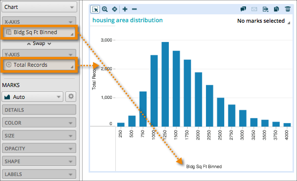

Visualizations use a grid layout of columns and rows. Fields added to the
X-axis drop-zone show on the horizontal axis (equivalent to columns),
and fields added to the Y-axis drop-zone show on the vertical axis
(equivalent to rows). The axes have headers that display the field names, and labels denoting
the field values (or members).
